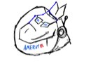
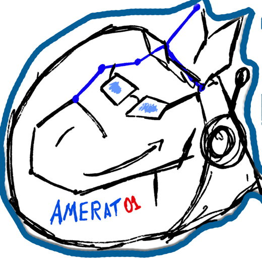
HEALTH-01
Team Amerat 01
Hajid Alkindi
health for the people on board


HEALTH-01
Team Amerat 01
Hajid Alkindi
health for the people on board
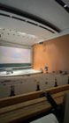
the problem
Up there, normal moves.
1–1.5%
bone lost each month
NASA fracture-risk report, page 4. Weight-bearing bone.
So we use each person's own days. Not an Earth average.
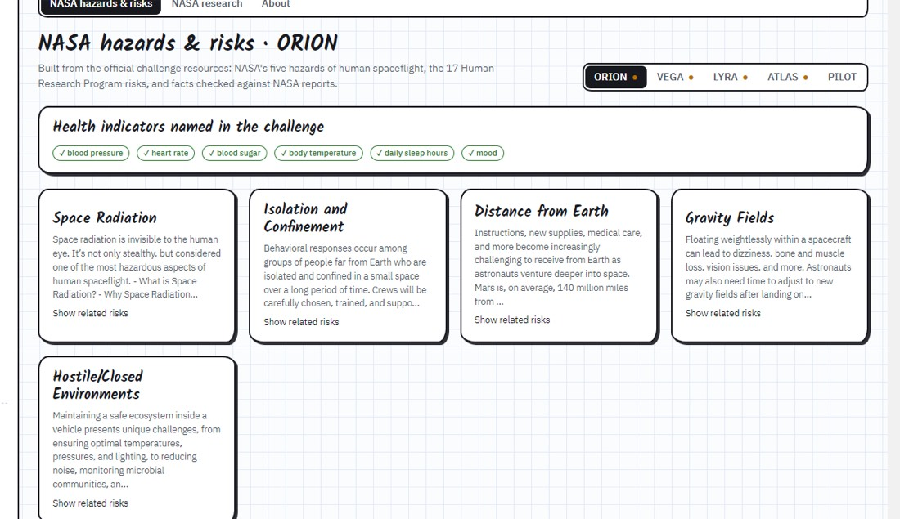
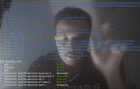
how it works
Watch in. A person decides.
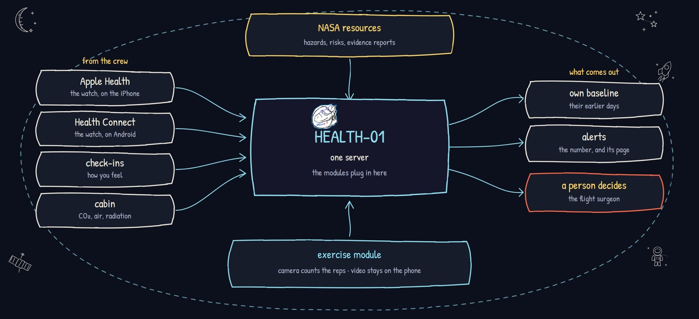
the proof
Earth studies. Not astronauts yet.
79%
illness episodes caught early
Stanford wearables. Mishra and colleagues, 2020. About 1 false alarm in 30 healthy days.
0.83
sugar pattern
CGMacros. 45 adults. A pattern, not a diagnosis.
1.1
beats off the watch
MMASH. 22 people. We checked the math.
from the studies
A problem. Then what we built.
problem
Crews lose about 2.4% of body weight per 100 days. NASA nutrition report, page 22.
solution
Nutrition tracking. Meals, water, and weight.
problem
The watch alone is weak on tiredness. PMData, score 0.55.
solution
We ask how they feel. Exercise tracking counts the work.
problem
Illness can show in the watch early. Stanford wearables, Mishra 2020.
solution
Compare each person to their own days. 79% caught early.
problem
Weight-bearing bone loses 1–1.5% a month. NASA fracture report, page 4.
solution
Exercise says go, go lighter, or rest.
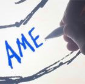
what you log
Exercise tracking
The camera detects the body and counts each rep. The video stays on the phone.
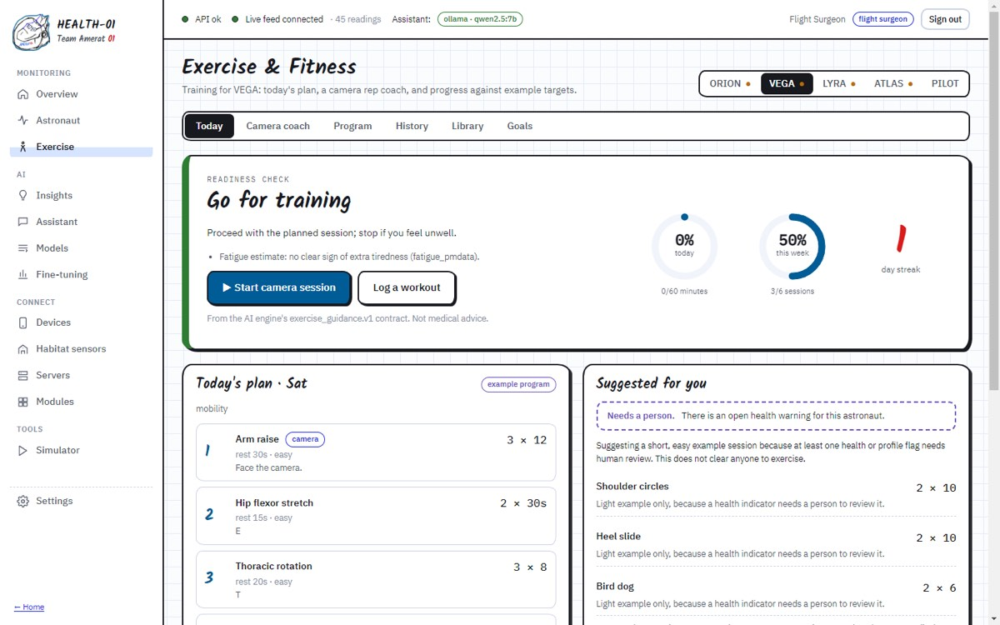
Nutrition tracking
Meals, water, and body weight. Example marks. Not a meal plan.
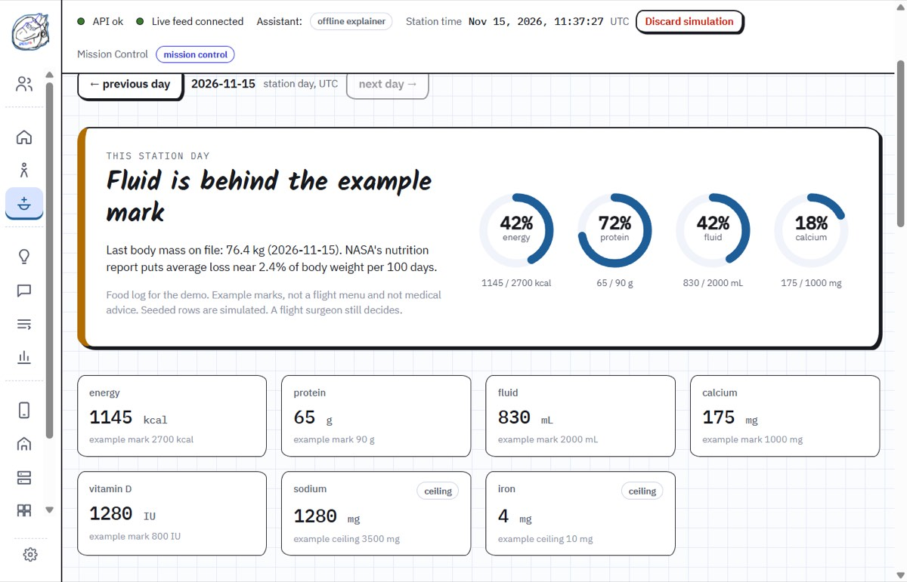
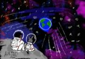
close
A person still decides.
Not a doctor.
Not tested on astronauts.
Every number has a home.
Kept: 14B. Match 0.92. No invented numbers. 6 of 8 probes. Not the live voice yet.
Failed: 0.5B, 17% invented numbers, 2 of 8. 32B, match 0.93, 4 of 8. The 7B was never trained.
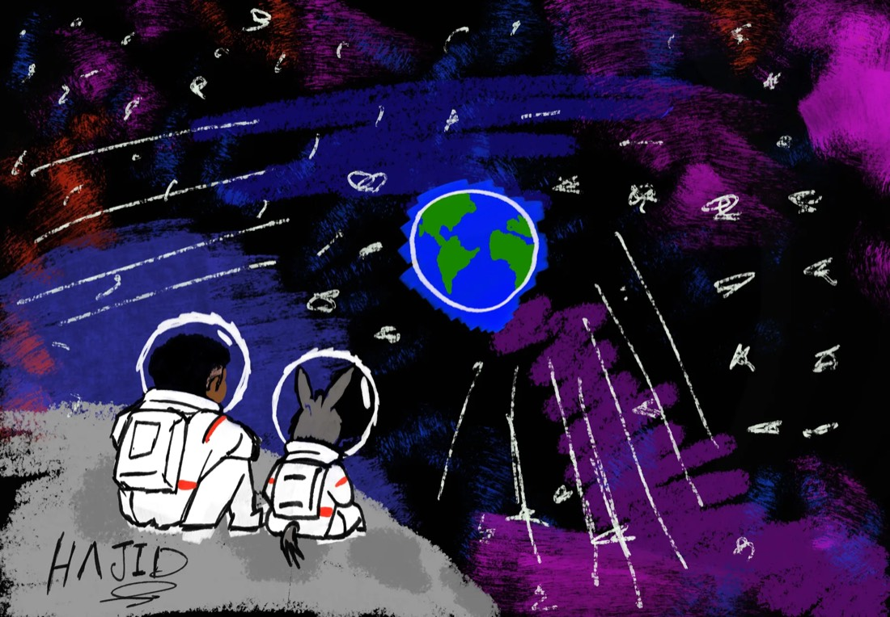